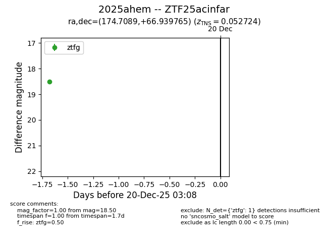
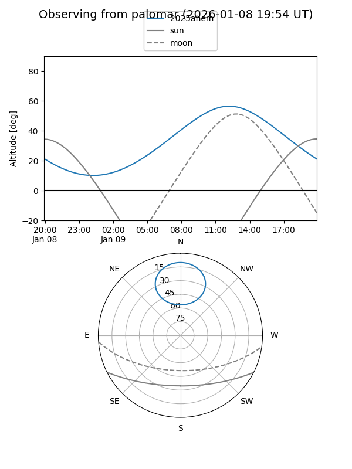
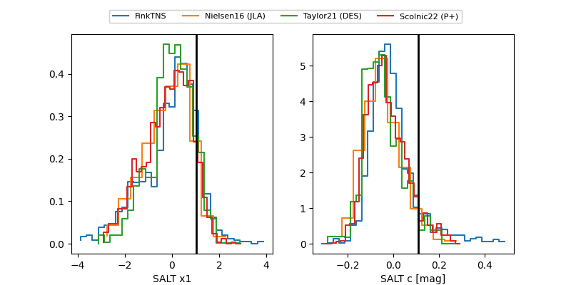

2025ahem
Target 2025ahem at 2025-12-20 22:28
Aliases and brokers:
FINK: fink-portal.org/ZTF25acinfar
Lasair: lasair-ztf.lsst.ac.uk/objects/ZTF25acinfar
ALeRCE: alerce.online/object/ZTF25acinfar
TNS: wis-tns.org/object/2025ahem
YSE: ziggy.ucolick.org/yse/transient_detail/2025ahem
alt names
ZTF25acinfar (ztf,fink_ztf)
2025ahem (tns,yse)
Coordinates:
equatorial (ra, dec) = 174.7089,+66.93977
equatorial (HMS+DMS) = 11:38:50.13,+66:56:23.15
galactic (l, b) = (133.5775,+48.66046)
Flags:
confirmed ia
Photometry:
last ztfg=18.17, ztfr=18.19
2 ztfg, 1 ztfr detections
Lightcurve

Visibility


Additional plots
